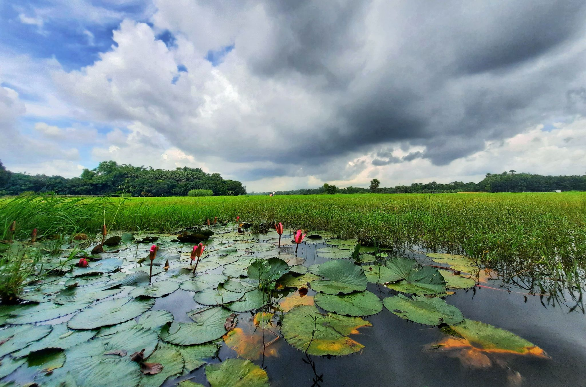
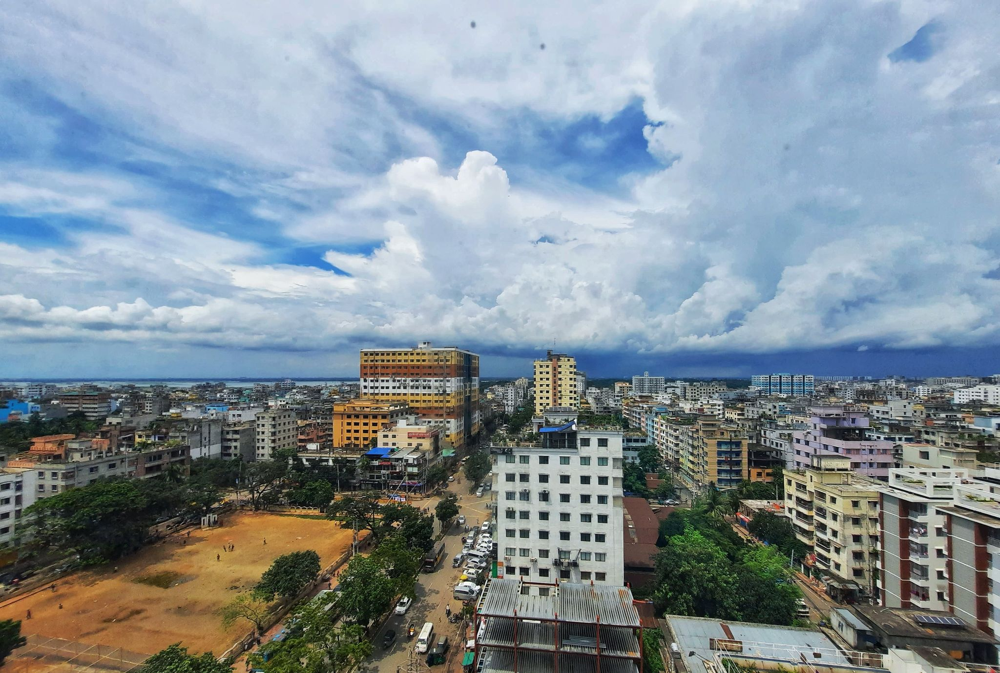
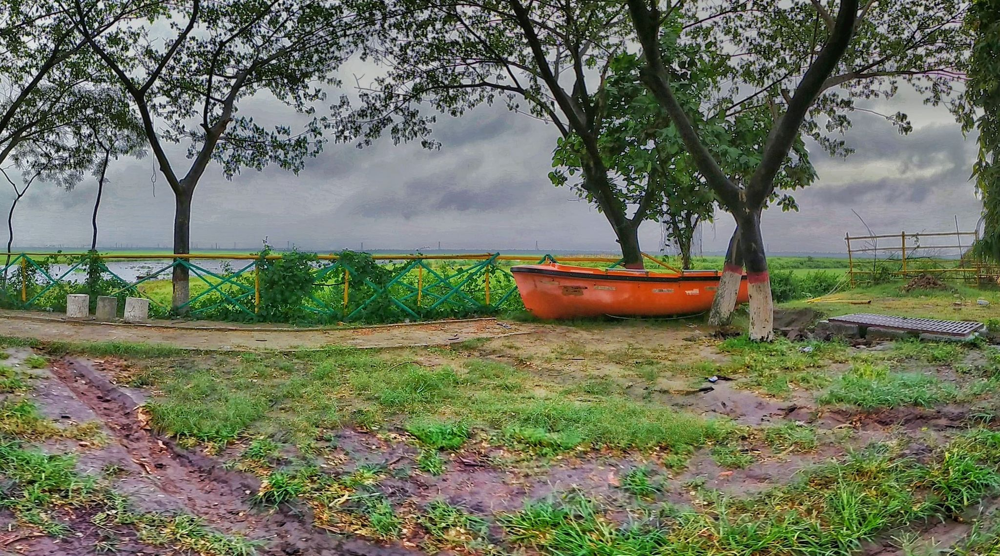
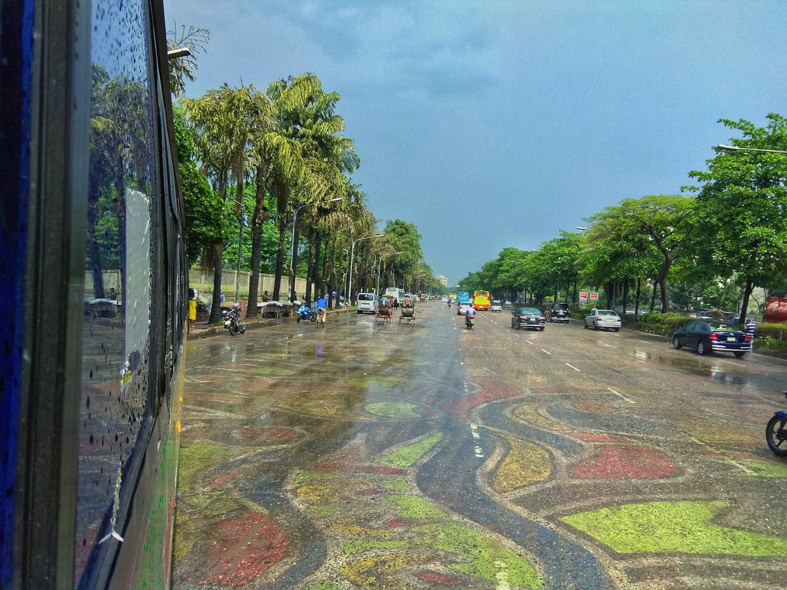
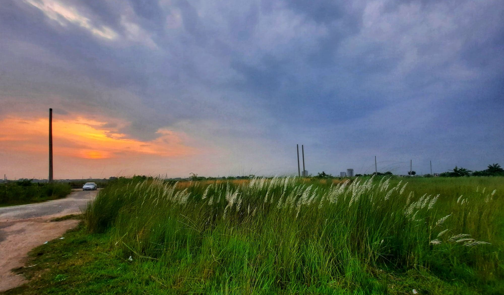

I love nature and wildlife My passion is capturing it in photographs to share with others. I fell in love with photography a long time ago. I was 13 when I first started taking photos. I captured everything. Doing pgotography is too much fun.Photography also tells a story. Everyone has a story. Now that people can capture images on their phones, everyone is capable of telling their own personal story through everyday photos. It is amazing that we are able to do this at the tips of our fingers and i love to capture thoes memories with my phone :)




